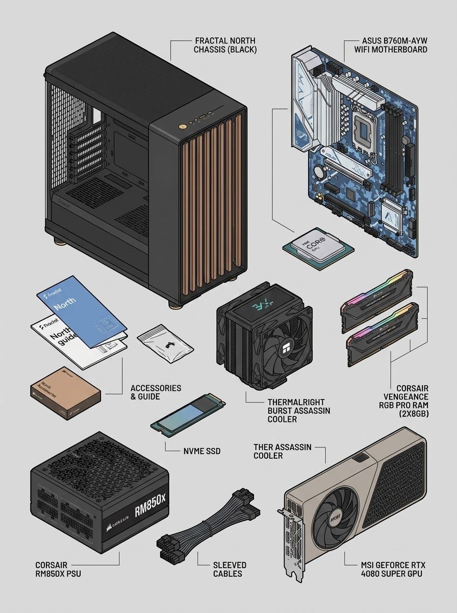
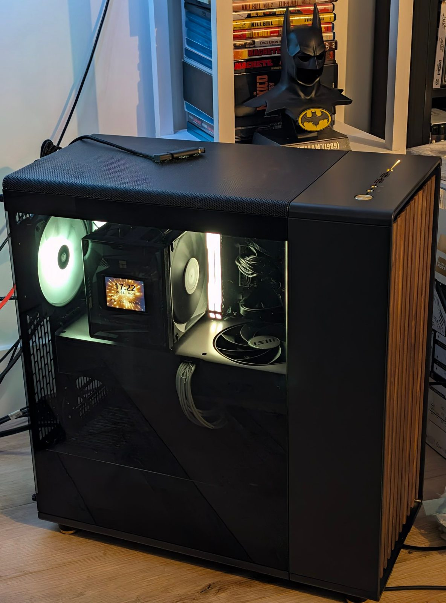
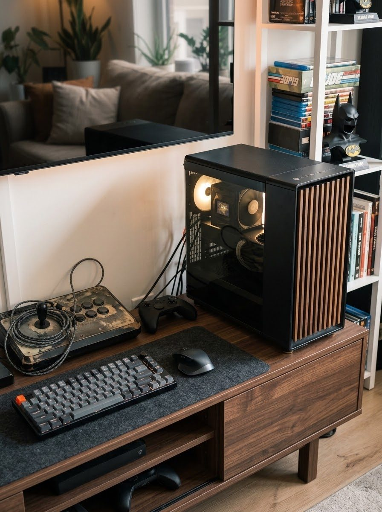
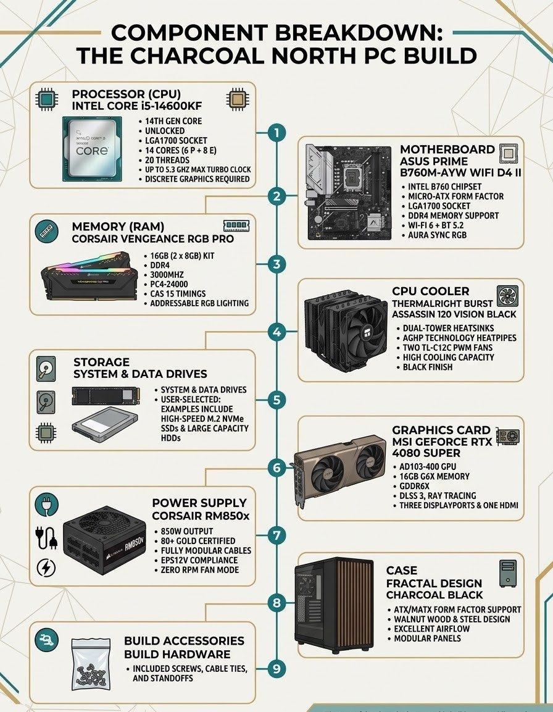

Console Killer: My Living-Room Gaming PC, Rebuilt
A new case, a new CPU, and the same RTX 4080 Super Expert. A refresh that turns the living-room PC into something no console can touch.

My living-room PC had one job: games, from the couch, on the big screen. It did the job, but it was due for a refresh. So I rebuilt it around a new case and a new CPU, kept the parts that were still earning their place, and ended up with something that looks like furniture and plays like nothing with a console badge.
What changed, what stayed
New in this build: the Fractal Design North case in Charcoal Black, an Intel Core i5-14600KF, an ASUS Prime B760M-AYW WiFi D4 II motherboard, and a Thermalright Burst Assassin 120 Vision Black cooler. The motherboard was part of the deal; the move to a 14th gen CPU needed a new board, and this one let me keep my DDR4 RAM alive.
Staying from the previous build: the MSI GeForce RTX 4080 Super Expert, the 16GB of Corsair Vengeance RGB Pro DDR4, the Corsair RM850x power supply, and all the data drives. A refresh, not a rebuild from zero; the parts that were already right stayed right.

The case: Fractal Design North, Charcoal Black
This is the part of the build you live with. The North pairs walnut wood slats with a steel frame, and on the TV stand it reads as furniture, not as a gaming tower. The tempered glass side still shows the build off, and the airflow is genuinely good; it breathes, it stays quiet, and it belongs in the room it lives in.
The CPU: Intel Core i5-14600KF
Fourteen cores, 6 performance and 8 efficient, 20 threads, and a max turbo clock up to 5.3 GHz. Unlocked, for headroom down the road. The KF means no integrated graphics, which is no loss at all; the 4080 Super does every pixel of work in this machine. For a gaming PC, this is the sweet spot: more than enough CPU for anything at 4K, without paying for cores games will never use.
The motherboard: ASUS Prime B760M-AYW WiFi D4 II
Micro-ATX, LGA1700, B760 chipset, with Wi-Fi 6 and Bluetooth 5.2 built in. The important letters are D4: DDR4 support, which meant the RAM carried over and the refresh stayed sensible. The board is compact in an ATX case, which leaves room to breathe and keeps the cable runs clean.
The cooler: Thermalright Burst Assassin 120 Vision Black
A dual-tower cooler with two PWM fans and the headroom this CPU wants. The Vision display on top shows the time and system stats at a glance, a small detail that earns its place every time I walk past the TV stand.

The GPU: MSI GeForce RTX 4080 Super Expert
The part that needed no upgrade. Sixteen gigabytes of GDDR6X on NVIDIA's Ada Lovelace architecture, with DLSS 3 and full ray tracing. This is the card doing the heavy lifting at 4K, and it is the reason the refresh could focus on the case and the CPU instead of the budget. It stays.
The RAM: 16GB Corsair Vengeance RGB Pro DDR4
Two 8GB sticks at 3000MHz, carried over. DDR4 still does the job for gaming, and keeping it kept the whole refresh honest. The RGB is there if I want it; most nights it just glows quietly behind the glass.
Storage and power
The data drives moved over untouched: fast NVMe for the games I am playing, big capacity drives for the library. Power comes from the Corsair RM850x, 850W, 80 Plus Gold, fully modular; plenty of headroom, and the modular cables keep the inside of the case clean.
The living-room setup
The PC sits on the TV stand, under the big screen, next to a shelf of films and a Batman bust. Keyboard and mouse on the desk pad for the games that want them, an Xbox controller and a fight stick for the couch. That is the whole point of this build: every game store, every mod, decades of backwards-compatible PC games, no paid subscription to play online, all from the same seat the consoles used to own.

Why it earns the name
A console is a fixed box with a fixed ceiling. This one is not. Native 4K with ray tracing and DLSS 3 frame generation, frame rates consoles cannot reach, settings I control, and a library that spans every era of PC gaming. The refresh was never about matching a console; it was about building something that leaves them behind by a long shot, in a case that looks better than any of them too.
The build at a glance
| Part | Component |
|---|---|
| Case | Fractal Design North, Charcoal Black (new) |
| CPU | Intel Core i5-14600KF (new) |
| Motherboard | ASUS Prime B760M-AYW WiFi D4 II (new) |
| CPU cooler | Thermalright Burst Assassin 120 Vision Black (new) |
| GPU | MSI GeForce RTX 4080 Super Expert, 16GB GDDR6X |
| RAM | Corsair Vengeance RGB Pro 16GB (2x8GB) DDR4 3000MHz |
| Storage | NVMe system drive plus capacity data drives |
| PSU | Corsair RM850x, 850W, 80 Plus Gold, fully modular |
| OS | Windows 11 Pro |

Conclusion
The refresh did what it was supposed to do. It looks better, it runs faster, and it still sits quietly under the TV doing the one job it has: games, from the couch, better than any box with a console badge.